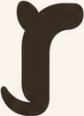
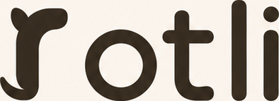

cocoa on linen
cocoa on linen
knockout on darkon clay

svg over board · 50%
Everything below is the live SVG (the actual kit deliverable), not a raster. The only PNGs on this page are the supplied board crops, shown as reference under the vectors.

board (reference raster)Ghosting = disagreement. The total width matches within ~1 board-px; the residual wobble (the board's wider t, rounder o) is the AI render drifting from any real font — the vector is true Baloo 2 @600 (real static instance), tracking −0.01.
cocoa on linen
knockout on dark
svg over board · 50%
483216Approve → the six SVGs go into kits/rotli/logo/, board.html gets rebuilt from
kit vectors, then fonts/tiles/LICENSES → your kit.json freeze call.
Caveat on file: the board's r panel is only 131px tall; a higher-res export would allow a finer re-trace.